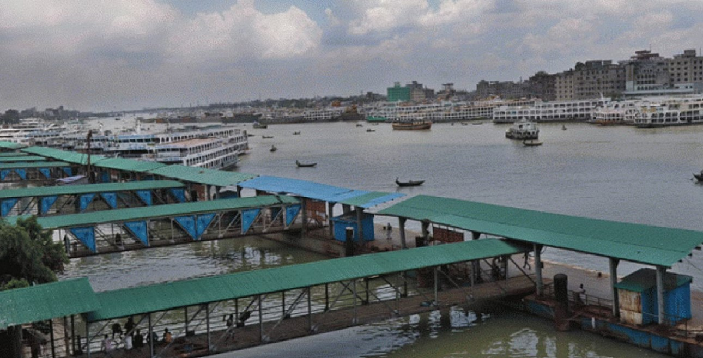

Cyclone Mocha: Water vessel movement resumes
A day after cyclone Mocha made landfall, movement of all types of water vessels resumed across the country this morning.The water transport movement began around 9:30am, Mobarak Hossain Majumder, public relations officer of Bangladesh Inland Water Transport Authority (BIWTA), told The Daily Star.BIWTA suspended operations of all types of water vessels across the country since Friday night due to Cyclone Mocha that formed in the Bay of Bengal and made landfall on the Cox's Bazar-north Myanmar coast yesterday afternoon.
Dhaka city alone experiencing over 600 MW of load shedding during daytime
Dhaka has alone been experiencing more than 600 MW of load shedding during daytime when demand for electricity remains relatively low than nighttime.According to official sources, like the previous few days, the country has been seeing over 2000 MW of power shortage.As a result, consumers across the country are facing power outages for 6 to 7 hours in different spells during the day. "After the evening, the situation will be deteriorating with the increase in demand," said a top official of the Bangladesh Power Development Board (BPDB) preferring anonymity.
The whole world is experiencing a dollar crisis, says Hasina
Prime Minister Sheikh Hasina says that the entire world is currently experiencing a dollar crisis and its effects aren’t limited to Bangladesh. “The dollar crisis is worldwide, not just in Bangladesh,” the prime minister said during a press briefing at her official residence, Ganabhaban, on Monday. “First there was the COVID pandemic, then the Ukraine-Russia war, and then, along with the war came sanctions and counter-sanctions. As a result, inflation has spiked worldwide. Transportation and production costs have gone up. This is why the entire world is suffering from a dollar crisis.” During the pandemic, imports and exports were hampered and travel abroad was halted, which meant that Bangladesh had low costs and the country was able to build up reserves, the prime minister said. “When economies reopened, dollars were spent, which is typical. In addition, we are providing power to the people, gas, we are conducting development work, we are investing, production is rising, so the pressure on the dollar is natural.
Shakib said he would score the fastest Test hundred: Papon

Bangladesh Cricket Board (BCB) president Nazmul Hassan Papon revealed on Wednesday that Test skipper Shakib Al Hasan told him that he would go on to score the fastest Test hundred by a Bangladesh batter ahead of the start of the second day of the lone Test against Ireland at the Sher-e-Bangla National Cricket Stadium in Mirpur.
Bangabazar fire: Booth opened near site to help victims file GDs
The Dhaka district administration today opened a booth near the site of the Bangabazar Shopping Complex to help victims file general diaries about valuable documents lost in Tuesday's fire, which razed the complex to the ground. "The shops' owners and staffers, who lost their trade licences, bank cheques and credit or debit cards, birth registration certificates and NID cards or any other essential documents in the fire, can file the GD with the help of Shahbagh police at the booth from now," Sayem Imran, an assistant commissioner and executive magistrate, told The Daily Star..
Dhaka's air quality the worst in the world today
Dhaka has topped the list of cities around the world with the worst air quality this morning.Dhaka, formerly known as Dacca, is the capital city of Bangladesh. It holds the title of not only being the largest city in the country, but being the 9th largest city worldwide. It also ranks at 6th place out of the most populous cities in the world, with just under 9 million people living within the city’s limits. Due to these reasons, as well as being the economic hub of the whole country, Dhaka is subject to some fairly bad pollution levels annually, with only brief periods of respite, that despite being lower still hold some relatively high numbers of pollution readings, making its air harmful to breathe year-round..
Disney lays off 7,000 employees as subscribers decline
The job cuts on Wednesday follow similar moves by US tech giants dialing back from a hiring spurt that began during the height of the pandemic. "I do not make this decision lightly," Iger said on a call to analysts after Disney posted its latest quarterly earnings.
Soft signal scrapped as ICC reveals major change to playing conditions
ICC have announced a major change to the Playing Conditions, among other tweaks, effective June 1, 2023.The major change involved the soft signal being scrapped, with umpires no longer required to give a soft signal when referring decisions to the TV umpire. "The on-field umpires will consult with the TV umpire before any decisions are taken," the ICC confirmed.
Celebration of the 19th Founding Anniversary of Stamford University Bangladesh
Stamford University Bangladesh celebrated its 19th founding Anniversary by keeping social distancing. The University began its journey on the 5th of January 2002, with due approval of the Government of the People’s Republic of Bangladesh. The University earned its name and fame due to the relentless effort of its Founder President & Vice Chancellor Late Prof. Dr .M. A. Hannan Feroz. A milad was held for its 19th founding anniversary. The Members of the Board of Trustees, Vice-Chancellor Prof. Muhammad Ali Naqi, Registrar, Treasurer, Chairmen of various departments, employees, faculty members and staff of Stamford University Bangladesh participated in the event.
Dengue fever sends 38 to hospitals
At least 38 dengue patients were hospitalised in the last 24 hours till this morning, eight of whom are outside Dhaka.With the new cases, the total number of such patients this year rose to 1,330 of whom 534 are from outside Dhaka, according to the Directorate General of Health Services (DGHS).Some 111 dengue patients are still undergoing treatment and 16 of them are outside the capital. Total number of deaths from this disease this year is 12 so far. A total of 1,207 dengue patients have been released from hospitals so far, of whom 515 are outside Dhaka.
Why the US dollar is an optimal reserve currency for Bangladesh
Bangladesh received an infamous and inappropriate coverage in the global press that the country was planning to use Indian rupee or Chinese renminbi for international payment settlements. In other words, the argument was that the Bangladesh Bank, the country's central bank, would be diversifying its foreign exchange reserves away from the US dollar to include more renminbi and rupee instead. It is infamous and inappropriate because the country's forex reserves continue to consist mostly of the US dollar-denominated assets.Bangladesh has experienced persistent and increasing bilateral trade imbalances against both China and India over the past decade, particularly since July 1, 2021. Note that most of the country's bilateral trades with China and India are invoiced in US dollars, and so the resultant international payment obligations are settled in US dollars. The idea of settling accrued payment obligations using either the Indian rupee or the renminbi instead of the US dollar is without substance, because their payment settlement is predetermined. In addition, the prevailing forex market really doesn't have access to those alternative currencies at any reasonable costs.
If the process of producing muslin, revived through government research in 2021, cannot be commercialised, the success will be under question, said Textiles and Jute Minister Golam Dastagir Gazi yesterday. It took about seven months to make a muslin sari of medium quality and so its price is very high, beyond the purchasing power of the masses, he said. If the masses cannot purchase muslin, questions will arise. Therefore, through commercial production, muslin should be kept within the purchasing power of common people. Only then will the research be fully successful, he said.